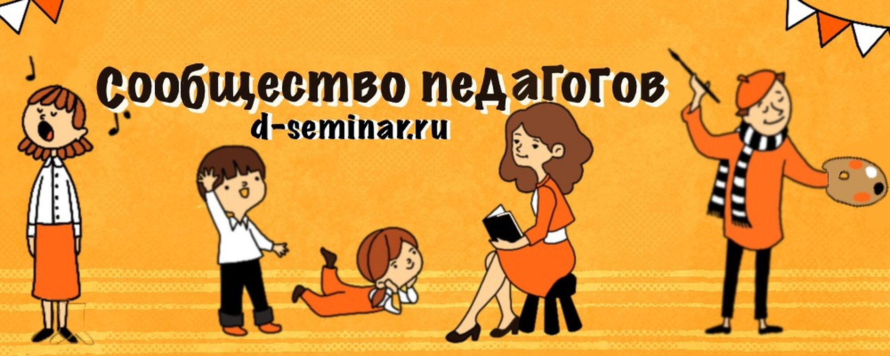
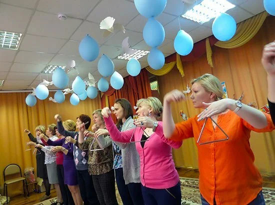
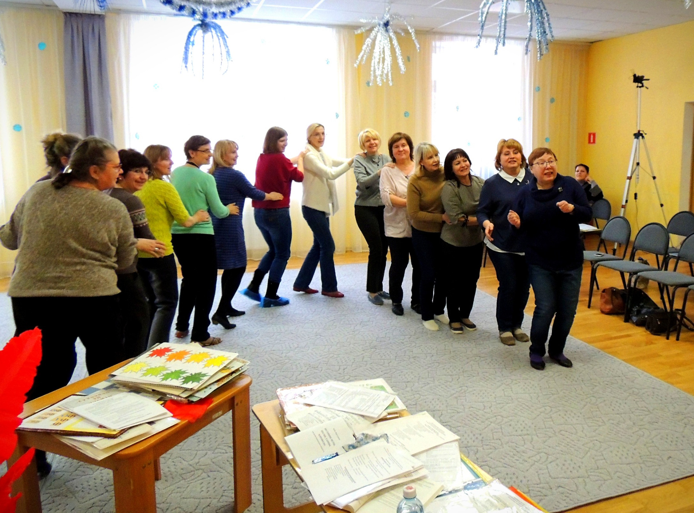
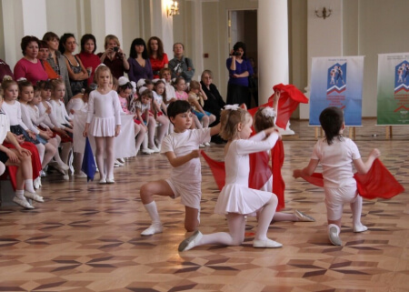

📰 Сетевое сообщество педагогов d-seminar.ru
Материалы для работы с детьми.
Авторские программы, методики, игры, сценарии, видео от коллег, книги и др.

Вебинар по музыкальному воспитанию.
По программе «Ладушки»
Тема:
Обучение детей игре на ложках
Содержание:
- Разнообразные способы и приёмы игры на ложках.
- Методика обучения игре на ложках детей дошкольного возраста.
- Репертуар для ансамбля ложкарей.

Семинар по программе "Ладушки"
Материал по Логоритмике
Тема: Особенности проведения логоритмических занятий с детьми дошкольного возраста
Автор:
Картушина Марина Юрьевна — известный педагог практик, почётный работник образования Российской Федерации.
Программы М.Ю. Картушиной: "Зелёный огонек здоровья", "Тоника" (музыкальное развитие детей 3-7 лет).
Подробное содержание:
- Логоритмические занятия для детей старшего дошкольного возраста (старшая и подготовительная группа);
- Логоритмические занятия для детей младшего дошкольного возраста (младшая и средняя группа);
- Логоритмические занятия для самых маленьких (дети: 2-3 года).

Картушина М.Ю. очный семинар
Автор: Суворова Татьяна Иосифовна — педагог, автор "Танцуй, Малыш", "Танцевальная ритмика для детей", "Спортивные олимпийские танцы", "Танцевальное конфетти", "Экологические танцы" и др.
Содержание:
- Видеоролики детских танцев (Берлинская полька, Божья коровка, Журавлиный клин, Кантри, Конькобежцы, Лошадки, Олимпийский вальс, Осенняя сюита, Танго, Бабка Ёжка, Танец с зонтиками, Танец с цветками, Танец с шарфами, Танец чёрных котов и белых кошек) – 14 шт.;
- Музыкальные треки к танцам – 14 шт.;
- Комментарии к танцам – 10 с.;
- Именной сертификат (2 ак. ч.).

Ритмика. Суворова Т.И.